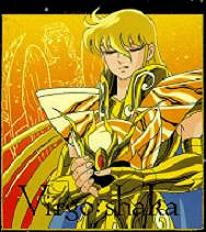

Forums galactiques > Assemblée Galactique : diplomatie officielle > Le sang de nos enfants
Pages : 1 2
| M.X. Respect diplomatique : 140  14/01 ETU 20:40  | Score : 16 Détails *Parmi les membres de la Confédération maaranienn, juste à la droite du Chambellan qui vient de demander la parole, un jeune diplomate. Il connait par coeur le discours, puisqu'il a participé à sa rédaction. Pour l'instant, il rêve. Il se demande quels événements ont pu pousser Maaran à adopter une position aussi radicale...*
Commandants, Sachez que de par les pouvoirs qui me sont conférés... ***** - Votre rapport, lieutenant. - Nos nouveaux vaisseaux se sont très bien comportés pendant l'exercice, mon capitaine. Ils sont vraiment plus performants que les anciens modèles... - Oui, les chantiers d'Edo ont fait du bon travail. Mais il va falloir... - Capitaine ! Nos senseurs détectent une brusque montée d'énergie dans le secteur 12-alpha-5 ! - Qu'est ce... Combien avons nous de sondes disponibles ? - Quatre, mon capitaine. - Envoyez les. Prévenez les vaisseaux avoisinants, je veux savoir de qui il s'agit. L'évolution, sergent ? - Les senseurs deux et trois sont HS. L'énergie continue d'augmenter. De façon apparemment maitrisée.... c'est pas normal, capitaine. - Arrivée des sondes prévue dans 3 minutes, mon capitaine. - Transmettez immédiatement tout ce que nous avons au Haut Commandement ! - Qu'est-ce... des ioniques ! ***** .... du Peuple de Maaran. Peuple qui est en deuil. Car le sang de nos enfants a coulé. Sans raison. ***** *Capitaine sur le pont !* - J'espère que vous avez une bonne raison de me faire venir, lieutenant. - Oui Amiral. Je crois que vous devriez voir ça. Un message du Troisième corps de la Veme Flotte reçu il y'a quelques minutes. Système 155. **** ... Avant même d'avoir parlementé, avant même d'avoir reçu nos ambassadeurs. Cette agression... ***** - Recontactez les immédiatement ! - Ils ne répondent pas, Amiral. Le corps entier semble avoir... disparu. - Les gouverneurs ? - Impossible d'établir une transmission nette. Comme si les antennes avaient été... détruites. ***** Aussi, je l'annonce officiellement, Maaran est en guerre. Et cette guerre sera totale. Le sang de nos enfants a coulé, et cela ne restera pas impuni... ***** - Sergent ! Contactez le Subtil et informez le Commodore Black qu'il vient de perdre un dixième de sa flotte. - A vos ordres ! ***** .. nos flottes en état d'alerte maximale. Aussi, nous demandons à tous les commandants d'évacuez les points de coordonnée sous contrôle maaranien... ***** - Lieutenant ! Préparez ma navette. Et dites au Prince que je suis en route. - Le Prince ? a cette heure-ci ? - Seriez vous en train de contestez mes ordres, "sergent" ? - Je... à vos ordres, Amiral ! ***** ...Désormais, seule une reddition inconditionnelle pourra nous arrêter. Le sang de nos enfants a coulé, inutilement. Ce crime ne saurait rester impuni.... ***** - Qu'y a-t-il, capitaine ? - Un message en provenance du Haut commandement, mon général. - La IXeme flotte ? - Non, Maaran. Du Prince lui même. - Pardon ?! Donnez ! ***** Jamais Maaran ne cèdera ! Le commandant Ash Morpheus vient de commettre une lourde erreur... ***** - Qu-est ce que... Capitaine ! Message à tous les vaisseaux du système : la Flotte passe imédiatement en état d'alerte maximale ! - Je... A vos ordres, mon général ! - Prévenez le gouverneur ! La Iere Flotte quittera le système dans trois heures... ***** ... Nous vaincrons ! *Notre jeune diplomate se réveille brutalement aux derniers mots du Chambellan. ce qu'il ne savait pas, c'est à quel point son rêve était proche de la vérité...* Pour Maaran ! Pour la liberté ! | ||
| joffrey Respect diplomatique : 1  14/01 ETU 20:48 | Score : -16 Détails BUTE LUI LA GUEULE jusqu'a qu'il crache son sang et fait lui aussi bouffer ses tripes !!!
| ||
| Hinata Respect diplomatique : 420  14/01 ETU 21:20 | Score : 4 Détails "Prince souverain de Maaran,
je vous assure le soutien du Protectorat de Sa'Cea dans cette difficile épreuve! Vous avez toujours été un ami et un allié indéfectible, cette attaque du commandant Ash Morpheus ne restera pas impunie. La plus grande partie de notre flotte est mise à votre disposition. Commandant Ash Morpheus, vous avez attaqué un ami de longue date et vous allez le regretter!" | ||
| Oz Respect diplomatique : 71  14/01 ETU 21:35 | Score : 3 Détails L'homme en bleu se lève, et sans descendre à la tribune, s'exprime avec force:
" En ce moment, nous pouvons compter les heures avant la formation du sénat. Mais combien de temps encore avant la formation d'une force dissuasive? Chaque instant qui nous sépare de cette protection est une chance de plus de voir les nôtres massacrés. Ces barbares sont persuadés aujourd'hui de la lenteur de cette assemblée, et utilisent cette lenteur contre nos Vies. Nous vous en conjurons, prouvons leur, le plus tôt possible, qu'ils ont tort! Leur confiance doit disparaître!" Il se rassoit, entouré des deux enfants. | ||
| Hinata Respect diplomatique : 420 14/01 ETU 21:47 | Score : 2 Détails "Ne vous en faites pas commandant Oz, personnellement je peux mettre en place cette fameuse force dissuasive.
Je ne laisserai personne s'attaquer à Maaran et rester impuni! Le Prince Souverain de Maaran a toujours été à mes côtés dans les situations difficiles comme la guerre contre le Grand Pope. Nous ne le laisserons pas seul dans la tourmente." | ||
| Oz Respect diplomatique : 71 14/01 ETU 22:01 | Score : 4 Détails Sans se lever:
"Commandante Hinata,nous voulons bien croire que vos intentions sont sincères. Vous allez effectivement personellement défendre ce commandant. Comme le précédent, et celui d'avant encore. Nous ne pouvons que louer votre générosité! Mais il faut maintenant passer à l'étape suivante. Vous n'aller en effet pas défendre personellement le sénat. Vous n'allez en effet pas contrôler personellement la politique extérieure du sénat. Vous n'allez en effet pas personellement contrôler toute la force du sénat. Ces propos peuvent vous offusquer, mais ils ont pour but de montrer l'intérêt d'une force sénatoriale dirigée par tous ses membres, et ce pour les protéger de tout danger potentiel, et contre ses propres membres, fûsse-t il le plus honorable à cette heure." La voix se tait. | ||
| Hinata Respect diplomatique : 420 14/01 ETU 22:16 | Score : 4 Détails "Commandant Oz,
je sais que votre but n'est pas de m'offusquer, cependant vous ne me ferez pas changer d'avis. Une force Sénatoriale "généralisée" est un mauvais choix. Dans tous les cas, chaque Sénateur aura sa propre flotte qui lui permettra de tenir en attendant que la flotte sénatoriale soit assemblée. De plus, ses voisins sénateurs pourront intervenir. Bon, je propose que nous continuions cette conversation dans la salle du Sénat." | ||
| hiryuu Respect diplomatique : 14 15/01 ETU 00:02 | Score : 2 Détails ***C'est alors que le commandant Hiryuu se leva d'un bond et entonna d'une voix forte et claire son message pour que tout le monde l'entende.***
"Prince, je suis attristé et navré de voir votre peuple subir de telles pertes. Cependant, nous ne savons toujours pas pourquoi le bombardement a eut lieu. Je suppose que vous avez pris la sage décision de parlementer avec le coupable... La violence engendre la violence. Une guerre est une chose très coûteuse alors que la diplomatie ne peut qu'améliorer les relations entre vous." Voyant que son auditoire semblait l'écouter, il se risqua à donner un conseil : "Vous pourriez lui impos... ahem, demander des indemnités. Ce serait fort avantageux pour les deux camps et aucune autre goutte de sang ne serait alors versée. Qu'en pensez-vous Prince ?" ***Le commandant resta debout dans l'attente d'une réponse favorable.*** | ||
| Ash Morpheus Respect diplomatique : 126  15/01 ETU 05:15 | Score : 1 Détails Pour me defendre je ne montrerai que mes MP.
Expéditeur M.X. Destinataire Ash Morpheus Date d'envoi 13/01 ETU 20:14 Sujet Source : IXeme Flotte Message Commandant, Votre manque de savoir vivre nous impressionne. Accueillir ses voisins en tentant d'envahir une leurs planètes... Maaran ne fait, pour l'instant, partie d'aucune coalition. Et vient d'acheter, au prix fort, ce lot de planètes. Il semblerait que le vendeur nous ait caché deux ou trois choses... Il est donc hors de question que Maaran vous "rende" ce qui nous appartient. Dans tous les cas, nous sommes prêts à oublier ce désagréable événement si vous vous excusez. Dans le cas contraire, ce sera la guerre. Il ne tient qu'à vous que nous ayons d'excellentes relations. Ne commettez pas une erreur qui risquerait d'être votre dernière erreur... Pour Maaran, Amiral X., Commandant de la IXeme Flotte, Capitaine de l'Implacable, Défenseur de Maaran et Vainqueur de la Guerre d'Edo Expéditeur Ash Morpheus Destinataire M.X. Date d'envoi 14/01 ETU 17:20 Sujet 155 Message Commandant, Je veux juste recuperer ma planete natale (anciennement Blue Fire). J'espere que vous me la cederez. Sinon les autres planetes que vous possedez deja vous pouvez les garder. Mais je veux juste recuperer l'ancienne Blue Fire. Excusez moi pour les tirs ioniques et les invasions, elle etaient deja lancees avant votre arrivee. Ash Morpheus Expéditeur M.X. Destinataire Ash Morpheus Date d'envoi 14/01 ETU 18:29 Sujet Re: HRP Message Deux planètes pour la planète mère. J'ai perdu plus de 150 frégates. Et déplacé vers le système 155 quelques centaines de croiseurs... Expéditeur Ash Morpheus Destinataire M.X. Date d'envoi 14/01 ETU 18:33 Sujet Re: HRP Message ok, je te decerait les deux planetes... pour les fregates, je te les rendrait a long terme. Etait-ce des fregates I? Envoie moi les CR et je te rembourserait, mais cela pourra prendre un moi car j'ai zero diamant et vu que j'echange 2 planetes contre une... ma production va diminuer. Ash Morpheus Je lui ai promis de lui rembourser ses pertes a long terme avant son entree en guerre. Je ne souhaites pas la guerre, je lui ai dit que je lui rembourserait, et c'est ce que je ferait. Cependant... J'espere qu'il comprendra aussi que si j'ai lance des tirs ioniques, c'etait pour NE PAS AVOIR a justement FAIRE LA GUERRE dans mon systeme natal... Ash Morpheus | ||
| M.X. Respect diplomatique : 140 15/01 ETU 09:17 | Score : 0 Détails *L'air irrité, le Chambellan demande la parole au nom de Maaran :*
Commandant Morpheus, Vous êtes habiles puisque les messages que vous avez montré sont vrais. Cependant, vous en avez oublié. Vous avez oublié celui qui lançait les négociations. Vous avez oublié celui où Maaran revoyait ses demandes à la baisse. Et surtout vous omettez de préciser que 5 autres bombardements ionuiques ont suivi ces messages ! Cinq autres bombardement alors que nous étion prêts à oublier les premiers, à oublier vos pitoyables tentatives d'invasion ! Que devions nous en déduire si ce n'est que vous n'avez jamais eu l'intention de négocier ? Si ce n'est que vous ne cherchiez qu'à gagner du temps ? Et vous mentez ! Vous prétendez avoir lancé les premiers bombardements avant que les gouverneurs maaraniens ne prennent posssession de ces planètes, vendues par le commandant l'Atlante, alors que nos flottes ont été touchées pour la première fois plus de quinze heures après ! Vous prétendez ne plus avoir de ressources alors que vous possédiez plus de 2000 diamants à moins de 3 heures près ! Et comment faire confiance à un commandant qui ment, à un commandant qui lance des invasions et des bombardements à titre préventif ?? Il suffit ! Vous avez commis une erreur, et la IXeme Flotte veillera à ce que vous en subissiez les conséquences ! Et au nom de Maaran, je tiens à remercier les commandants nous soutenant. Et les prie de ne pas inutilement exposer leurs soldats aux tirs ioniques qui secouent le système 155. Il y'a déjà eu trop de soldats de valeur tombés inutilement. Maaran vaincra ! **EDIT : HRP : Désolé, le messages revoyant les exigences à la baisse est resté à l'état de brouillon sur ma boite mail. J'ai été voir mes compte rendus avant d'aller sur le forum... aussi, n'en tenez pas compte. Merci** | ||
| Ash Morpheus Respect diplomatique : 126 15/01 ETU 11:12 | Score : 2 Détails Que voulez vous pour que cette guerre cesse?
Diviser mon systeme natal en deux? Vous prenez la moitie, et moi l'autre, cela vous convient-il? Je ne cherche en aucun cas a maintenir cette guerre, ainsi je demande ce que vous voulez [HRP] Mais n'y allez pas trop fort non plus [/HRP] Voulez vous etre rembourse de vos fregates? je le ferais a long terme si vous le voulez. Ash Morpheus | ||
| Shaka Respect diplomatique : 19  15/01 ETU 11:51 | Score : 1 Détails le commandant Ash Morpheus a raison, cette guerre ne peut qu'affaiblir les deux parties.
Une paix serait plus profitable | ||
| M.X. Respect diplomatique : 140 15/01 ETU 11:57 | Score : 1 Détails *Le représentant de Maaran demande la parole :*
Commandants, Sachez que je représente Maaran en cette Assemblée. Commandant Morpheus, comment pouvons nous vous faire confiance désormais ? Comment pouvons nous vous croire après ces agressions injustifiées, injustifiables ? Seule votre reddition ionconditionnelle pourra terminer cette guerre. Il n'y aura plus de négociation. Nous n'en démordrons pas. Je peux déjà vous affirmer que le Prince exigera le démantèlement complet de votre force ionique. Le reste ? Je l'ignore. Peut être rien, peut être tout. Si vous vous rendez, envoyez immédiatement un émissaire sur Maaran. Nous vous donnerons là nos conditions. Maaran vaincra ! | ||
| hiryuu Respect diplomatique : 14 15/01 ETU 12:00 | Score : 1 Détails ***En voyant le commandant Ash Mopheus pour la première fois prendre la parole pour sa défense, Hiryuu se leva pour interrompre la conversation des deux protagonistes de l'affaire en cours.***
"Hum... Excusez moi de vous couper la parole puissants commandeurs, mais quelque chose me tracasse. Commandant Ash Morpheus, confirmez-vous les dires du Prince de Maaran ? Si oui, voulez-vous bien nous éclairer sur vos intentions ? Quant à vous Prince, j'aimerais, si ce n'est pas trop vous offenser, voir ces rapports de bombardements ioniques." Sondant les réactions de l'assistance, le commandant Hiryuu prononça ces quelques mots avant de se rasseoir. "Dans le cas où ces bombardements s'avéreraient vrais, ma flotte, aussi petite soit-elle, est vôtre." ***En s'inclinant, il regagna sa place, admirant ces grands commandants et rêvant de parvenir un jour à leur niveau.*** | ||
| Ash Morpheus Respect diplomatique : 126 15/01 ETU 12:07 | Score : 2 Détails Ces tirs ioniques ont reelement existes, il ne ment pas.
Je pourrais cesser la guerre, je me placerait en PC 3, puis ioniserait mes propres troupes ioniques dans mon systeme natal. Ce soir, une invasion ainsi que des tirs ioniques arriveront, ce seront les derniers si vous acceptez le traite de paix. Je partagerai mon systeme natal en deux, la moitie pour moi, l'autre pour vous, je choisirai mes planetes, et les votres. Sinon, quelles sont vos conditions pour cet arret de guerre? N'allez pas trop loin, l'affaire concernera mon systeme natal et lui uniquement. Ash Morpheus EDIT : vous pouvez avoir confiance en moi, beaucoup de gens ont eu confiance en moi, et je ne l'ai pas trahie. Je suis un commandant qui respecte ce que je dis. | ||
| Ash Morpheus Respect diplomatique : 126 15/01 ETU 12:11 | Score : 1 Détails Hiryuu, mes intentions n'etaient pas de detruire le commandant M.X. les miennes etaient de reprendre ma planete natale et puis d'en arreter la.
Puis il m'a declare la guerre (pas tres diplomate M.X.) je ne pouvais faire que riposter, et non pas me laisser faire. D'autres questions? *Le commandant Ash Morpheus s'assit , paraissant visiblement agacé* | ||
| M.X. Respect diplomatique : 140 15/01 ETU 12:17 | Score : 1 Détails *Le représentant de Maaran demande la parole, passablement nerveux :*
Commandants, Sachez que je représente Maaran en cette Assemblée. Commandant Morpheus, cessez de déformer les faits. Nous n'avons déclaré la guerre qu'après deux séries de bombardements et plusieurs tentative d'invasion. Avant, nous étions prêts à négocier. Le fait que parmi les planètes que nous avions achetées se trouvaient votre planète mère a été une surprise. Désagréable. Mais nous n'en sommes en aucun cas responsables. Et, contrairement à vous, jamais nous n'avons menti. Jamais nous n'avons effectué d'agressions "préventives". Il suffit. Je vous le répète, seule votre reddition inconditionnelle pourra terminer cette guerre. Envoyez immédiatement votre émissaire sur Maaran. Nous y règlerons alors les modalités de votre reddition. Cette guerre ne sera considérée comme terminée que lorsque votre force de frappe ionique aura été démantelée. Pas avant. Pour l'instant, le général Yahnta n'a ordre de ne lancer aucune offensive. Cependant, l'Amiral terminera les opérations de libération en cours. Après, la IXeme Flotte suspendra les hostilités jusqu'au dénouement des "négociations". Pour Maaran ! *HRP : émissaire = contact par MP. Et je risque d'être relativement peu présent avant mardi 18 heures. Désolé.* | ||
| hiryuu Respect diplomatique : 14 15/01 ETU 12:26 | Score : 0 Détails ***Tout en restant assit car d'une nature paresseuse il demanda au commandeur Ash Morpheus d'un ton suspicieux.***
"Il vous a juste déclaré la guerre. Pourquoi alors, ne pas avoir entamé une instance de diplomatie ? Et pourquoi avoir menti sur le stock de diamants ?" ***Il mit sa main sous son menton et pris un air d'interrogation dans l'attente d'une réponse du commandant.*** | ||
| Ash Morpheus Respect diplomatique : 126 15/01 ETU 12:33 | Score : 0 Détails Il a lui meme declare la guerre apres avoir entame les discutions diplomatiques.
En ce qui concerne les diamants, je les ai recu d'un transfert, mais je ne puis vous montrer le CR, car je l'ai efface, en meme temps que ceux des tirs ioniques. D'autres questions du genre? Ash Morpheus | ||
| Maedhros Respect diplomatique : 296  15/01 ETU 13:13 | Score : 0 Détails Suite à un echange de message,je pense que la paix avec le commandant Morpheus peut etre maintenue.
Il ma parue d'une grande civilité. Cette guerre couterait beaucoup en vie humaine et les deux camps serait affaiblie. je vous souhaite donc de tres bonne negociation. |
Pages : 1 2
Forums galactiques > Assemblée Galactique : diplomatie officielle > Le sang de nos enfants